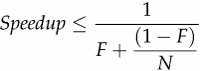
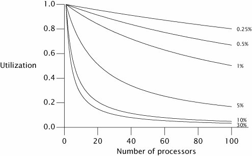
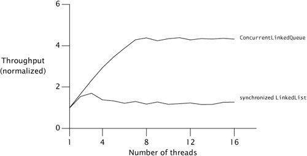

{% include JB/setup %}
{% raw %}
<div>


<a name="ch11lev1sec2" class="calibre18" id="ch11lev1sec2"></a>
<h3 id="647011-847" class="docSection1Title">11.2. Amdahl's Law</h3>
<p class="docText1">Some problems can be solved faster with more resourcesthe more workers available for harvesting crops, the faster the harvest can be completed. Other tasks are fundamentally serialno number of additional workers will make the crops grow any faster. If one of our primary reasons for using threads is to harness the power of multiple processors, we must also ensure that the problem is amenable to parallel decomposition and that our program effectively exploits this potential for parallelization.</p>
<p class="docText1">Most concurrent programs have a lot in common with farming, consisting of a mix of parallelizable and serial portions. <span class="docEmphasis">Amdahl's law</span> describes how much a program can theoretically be sped up by additional computing resources, based on the proportion of parallelizable and serial components. If <span class="docEmphasis">F</span> is the fraction of the calculation that must be executed serially, then Amdahl's law says that on a machine with <span class="docEmphasis">N</span> processors, we can achieve a speedup of at most:</p>
<p class="docText1">
</p>
<p class="docText1">As <span class="docEmphasis">N</span> approaches infinity, the maximum speedup converges to 1/<span class="docEmphasis">F</span>, meaning that a program in which fifty percent of the processing must be executed serially can be sped up only by a factor of two, regardless of how many processors are available, and a program in which ten percent must be executed serially can be sped up by at most a factor of ten. Amdahl's law also quantifies the efficiency cost of serialization. With ten processors, a program with 10%serialization can achieve at most a speedup of 5.3 (at 53% utilization), and with 100 processors it can achieve at most a speedup of 9.2 (at 9% utilization). It takes a lot of inefficiently utilized CPUs to never get to that factor of ten.</p>
<p class="docText1"><a class="calibre2" href="#ch11fig01">Figure 11.1</a> shows the maximum possible processor utilization for varying degrees of serial execution and numbers of processors. (Utilization is defined as the speedup divided by the number of processors.) It is clear that as processor counts increase, even a small percentage of serialized execution limits how much throughput can be increased with additional computing resources.</p>
<a name="ch11fig01" class="calibre18" id="ch11fig01"></a><p class="calibre21"><div class="calibre12">
<h5 class="docExampleTitle">Figure 11.1. Maximum Utilization Under Amdahl's Law for Various Serialization Percentages.</h5>
</div></p><p class="docText1">
</p>
<p class="calibre1"> </p>
<p class="docText1"><a class="calibre2" href="ch06.html#ch06">Chapter 6</a> explored identifying logical boundaries for decomposing applications into tasks. But in order to predict what kind of speedup is possible from running your application on a multiprocessor system, you also need to identify the sources of serialization in your tasks.</p>
<p class="docText1"><a name="iddle1777" class="calibre18" id="iddle1777"></a><a name="iddle1778" class="calibre18" id="iddle1778"></a><a name="iddle3986" class="calibre18" id="iddle3986"></a><a name="iddle3987" class="calibre18" id="iddle3987"></a><a name="iddle4229" class="calibre18" id="iddle4229"></a><a name="iddle4230" class="calibre18" id="iddle4230"></a><a name="iddle4272" class="calibre18" id="iddle4272"></a><a name="iddle4273" class="calibre18" id="iddle4273"></a><a name="iddle5034" class="calibre18" id="iddle5034"></a>Imagine an application where <span class="docEmphasis">N</span> threads execute <tt class="calibre25">doWork</tt> in <a class="calibre2" href="#ch11list01">Listing 11.1</a>, fetching tasks from a shared work queue and processing them; assume that tasks do not depend on the results or side effects of other tasks. Ignoring for a moment how the tasks get onto the queue, how well will this application scale as we add processors? At first glance, it may appear that the application is completely parallelizable: tasks do not wait for each other, and the more processors available, the more tasks can be processed concurrently. However, there is a serial component as wellfetching the task from the work queue. The work queue is shared by all the worker threads, and it will require some amount of synchronization to maintain its integrity in the face of concurrent access. If locking is used to guard the state of the queue, then while one thread is dequeing a task, other threads that need to dequeue their next task must waitand this is where task processing is serialized.</p>
<p class="docText1">The processing time of a single task includes not only the time to execute the task <tt class="calibre25">Runnable</tt>, but also the time to dequeue the task from the shared work queue. If the work queue is a <tt class="calibre25">LinkedBlockingQueue</tt>, the dequeue operation may block less than with a synchronized <tt class="calibre25">LinkedList</tt> because <tt class="calibre25">LinkedBlockingQueue</tt> uses a more scalable algorithm, but accessing any shared data structure fundamentally introduces an element of serialization into a program.</p>
<p class="docText1">This example also ignores another common source of serialization: result handling. All useful computations produce some sort of result or side effectif not, they can be eliminated as dead code. Since <tt class="calibre25">Runnable</tt> provides for no explicit result handling, these tasks must have some sort of side effect, say writing their results to a log file or putting them in a data structure. Log files and result containers are usually shared by multiple worker threads and therefore are also a <a name="iddle1028" class="calibre18" id="iddle1028"></a><a name="iddle1029" class="calibre18" id="iddle1029"></a><a name="iddle1082" class="calibre18" id="iddle1082"></a><a name="iddle2220" class="calibre18" id="iddle2220"></a><a name="iddle2410" class="calibre18" id="iddle2410"></a><a name="iddle2579" class="calibre18" id="iddle2579"></a><a name="iddle3762" class="calibre18" id="iddle3762"></a><a name="iddle3763" class="calibre18" id="iddle3763"></a><a name="iddle4078" class="calibre18" id="iddle4078"></a><a name="iddle4079" class="calibre18" id="iddle4079"></a><a name="iddle4176" class="calibre18" id="iddle4176"></a><a name="iddle4872" class="calibre18" id="iddle4872"></a><a name="iddle4873" class="calibre18" id="iddle4873"></a>source of serialization. If instead each thread maintains its own data structure for results that are merged after all the tasks are performed, then the final merge is a source of serialization.</p>
<a name="ch11list01" class="calibre18" id="ch11list01"></a><h5 id="title-IDA2VYDS" class="docExampleTitle">Listing 11.1. Serialized Access to a Task Queue.</h5><p class="calibre21"><table cellspacing="0" width="90%" border="1" cellpadding="5" class="calibre5"><tr class="calibre6"><td class="calibre28">
<pre class="calibre30">public class WorkerThread extends Thread {
    private final BlockingQueue&lt;Runnable&gt; queue;

    public WorkerThread(BlockingQueue&lt;Runnable&gt; queue) {
        this.queue = queue;
    }

    public void run() {
        while (true) {
            try {
                Runnable task = queue.take();
                task.run();
            } catch (InterruptedException e) {
                break;  /*  Allow thread to exit  */
            }
        }
    }
}
</pre><br class="calibre11"/>
</td></tr></table></p>
<a name="ch11sb04" class="calibre18" id="ch11sb04"></a><p class="calibre21"><table cellspacing="0" width="90%" border="1" cellpadding="5" class="calibre5"><tr class="calibre6"><td class="calibre28">
<p class="docText1">All concurrent applications have some sources of serialization; if you think yours does not, look again.</p>
</td></tr></table></p><p class="calibre1"> </p>
<a name="ch11lev2sec3" class="calibre18" id="ch11lev2sec3"></a>
<h4 id="title-IDAUWYDS" class="docSection2Title">11.2.1. Example: Serialization Hidden in Frameworks</h4>
<p class="docText1">To see how serialization can be hidden in the structure of an application, we can compare throughput as threads are added and infer differences in serialization based on observed differences in scalability. <a class="calibre2" href="#ch11fig02">Figure 11.2</a> shows a simple application in which multiple threads repeatedly remove an element from a shared <tt class="calibre25">Queue</tt> and process it, similar to <a class="calibre2" href="#ch11list01">Listing 11.1</a>. The processing step involves only thread-local computation. If a thread finds the queue is empty, it puts a batch of new elements on the queue so that other threads have something to process on their next iteration. Accessing the shared queue clearly entails some degree of serialization, but the processing step is entirely parallelizable since it involves no shared data.</p>
<a name="ch11fig02" class="calibre18" id="ch11fig02"></a><p class="calibre21"><div class="calibre12">
<h5 class="docExampleTitle">Figure 11.2. Comparing Queue Implementations.</h5>
</div></p><p class="docText1"><div class="v8"><a target="_self" href="11fig02_alt.jpg" class="calibre2">[View full size image]</a></div></p>
<p class="calibre1"> </p>
<p class="docText1">The curves in <a class="calibre2" href="#ch11fig02">Figure 11.2</a> compare throughput for two thread-safe <tt class="calibre25">Queue</tt> implementations: a <tt class="calibre25">LinkedList</tt> wrapped with <tt class="calibre25">synchronizedList</tt>, and a <tt class="calibre25">ConcurrentLinkedQueue</tt>. The tests were run on an 8-way Sparc V880 system running <a name="iddle1608" class="calibre18" id="iddle1608"></a><a name="iddle1620" class="calibre18" id="iddle1620"></a><a name="iddle2471" class="calibre18" id="iddle2471"></a><a name="iddle2472" class="calibre18" id="iddle2472"></a><a name="iddle4082" class="calibre18" id="iddle4082"></a><a name="iddle4177" class="calibre18" id="iddle4177"></a><a name="iddle4178" class="calibre18" id="iddle4178"></a><a name="iddle4182" class="calibre18" id="iddle4182"></a>Solaris. While each run represents the same amount of "work", we can see that merely changing queue implementations can have a big impact on scalability.</p>
<p class="docText1">The throughput of <tt class="calibre25">ConcurrentLinkedQueue</tt> continues to improve until it hits the number of processors and then remains mostly constant. On the other hand, the throughput of the synchronized <tt class="calibre25">LinkedList</tt> shows some improvement up to three threads, but then falls off as synchronization overhead increases. By the time it gets to four or five threads, contention is so heavy that every access to the queue lock is contended and throughput is dominated by context switching.</p>
<p class="docText1">The difference in throughput comes from differing degrees of serialization between the two queue implementations. The synchronized <tt class="calibre25">LinkedList</tt> guards the entire queue state with a single lock that is held for the duration of the <tt class="calibre25">offer</tt> or <tt class="calibre25">remove</tt> call; <tt class="calibre25">ConcurrentLinkedQueue</tt> uses a sophisticated nonblocking queue algorithm (see <a class="calibre2" href="ch15lev1sec4.html#ch15lev2sec7">Section 15.4.2</a>) that uses atomic references to update individual link pointers. In one, the entire insertion or removal is serialized; in the other, only updates to individual pointers are serialized.</p>
<a name="ch11lev2sec4" class="calibre18" id="ch11lev2sec4"></a>
<h4 id="title-IDAL2YDS" class="docSection2Title">11.2.2. Applying Amdahl's Law Qualitatively</h4>
<p class="docText1">Amdahl's law quantifies the possible speedup when more computing resources are available, if we can accurately estimate the fraction of execution that is serialized. Although measuring serialization directly can be difficult, Amdahl's law can still be useful without such measurement.</p>
<p class="docText1">Since our mental models are influenced by our environment, many of us are used to thinking that a multiprocessor system has two or four processors, or maybe (if we've got a big budget) as many as a few dozen, because this is the technology that has been widely available in recent years. But as multicore CPUs <a name="iddle1286" class="calibre18" id="iddle1286"></a><a name="iddle1287" class="calibre18" id="iddle1287"></a><a name="iddle1611" class="calibre18" id="iddle1611"></a><a name="iddle1612" class="calibre18" id="iddle1612"></a><a name="iddle1692" class="calibre18" id="iddle1692"></a><a name="iddle2467" class="calibre18" id="iddle2467"></a><a name="iddle2468" class="calibre18" id="iddle2468"></a><a name="iddle3101" class="calibre18" id="iddle3101"></a><a name="iddle3102" class="calibre18" id="iddle3102"></a><a name="iddle3147" class="calibre18" id="iddle3147"></a><a name="iddle3152" class="calibre18" id="iddle3152"></a><a name="iddle3887" class="calibre18" id="iddle3887"></a><a name="iddle3888" class="calibre18" id="iddle3888"></a><a name="iddle4058" class="calibre18" id="iddle4058"></a><a name="iddle4349" class="calibre18" id="iddle4349"></a><a name="iddle4501" class="calibre18" id="iddle4501"></a><a name="iddle4762" class="calibre18" id="iddle4762"></a>become mainstream, systems will have hundreds or even thousands of processors. <sup class="docFootnote"><a class="calibre2" href="#ch11fn03">[3]</a></sup> Algorithms that seem scalable on a four-way system may have hidden scalability bottlenecks that have just not yet been encountered.</p><blockquote class="calibre19"><p class="docFootnote1"><sup class="calibre27"><a name="ch11fn03" class="calibre18" id="ch11fn03">[3]</a></sup> Market update: at this writing, Sun is shipping low-end server systems based on the 8-core Niagara processor, and Azul is shipping high-end server systems (96, 192, and 384-way) based on the 24-core Vega processor.</p></blockquote>
<p class="docText1">When evaluating an algorithm, thinking "in the limit" about what would happen with hundreds or thousands of processors can offer some insight into where scaling limits might appear. For example, <a class="calibre2" href="ch11lev1sec4.html#ch11lev2sec9">Sections 11.4.2</a> and <a class="calibre2" href="ch11lev1sec4.html#ch11lev2sec10">11.4.3</a> discuss two techniques for reducing lock granularity: lock splitting (splitting one lock into two) and lock striping (splitting one lock into many). Looking at them through the lens of Amdahl's law, we see that splitting a lock in two does not get us very far towards exploiting many processors, but lock striping seems much more promising because the size of the stripe set can be increased as processor count increases. (Of course, performance optimizations should always be considered in light of actual performance requirements; in some cases, splitting a lock in two may be enough to meet the requirements.)</p>

<p class="calibre1"> </p>

</div>

{% endraw %}

